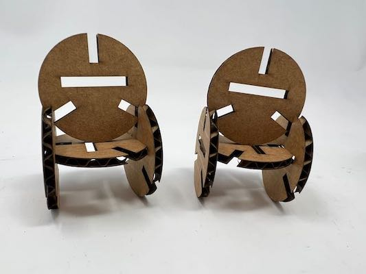

<div class="textcontainer">
<br>
### Week 2: 2D Design & Cutting
#### Assignment 1: Press-Fit Construction
For this assignment, I knew I wanted to do something geometric, both because I
like geometric designs and because I knew it would work well with the "can be
assembled in multiple ways" aspect. I know that hexagons pattern well, so I
thought to make something with those. Ideally, my kit would be useful for
something practical, I thought, and so the vague concept in my head was a phone
stand, using a series of hexagonal backing pieces for the phone to rest on. I
quickly realized that I'd need multiple pieces for this in order to connect the
hexagons how I wanted, so I drafted up three pieces in Fusion: the main hexagonal
tiles, a smaller triangular piece I thought could be used for the base, and a
tiny E-shaped connector that could be used to stack tiles parallel to each other.
<div class="flexrow">
</div>
<p class="caption">Some early sketches I did to help conceptualize the phone stand idea.</p>
One trip to the laser cutter later, I realized this first attempt was not a
success, and that indeed I was way overthinking the prompt. I decided to change
ideas entirely, althogh I liked the idea of being able to stack parallel tiles.
My next idea was for a more sculptural piece, where a central body of parallel
tiles (now circular) could be held up on feet of some kind. Initially, this idea
also used two tile types, but eventually I decided to opt for the tried-and-true
method of doing a simpler thing better rather than doing a more complex thing
worse, so I cut it down to a single circular tile design.
<div class="flexrow">
</div>
<p class="caption">A photo of the original three tile designs, on my 13" laptop for scale.</p>
For most of the tile connections, a standard reciprocal-notch design would
provid a lot of stability, so I added notches around the circle's edge. I also
thought it would be cool if I could sandwich a tile between two others, so I
added notches entirely internal to the area of the circle. I wasn't sure what
kind of symmetry would work best, so I made two versions: one with 4 edge
notches and two center notches (to allow for center connections of either
orientation), and the other with 3 edge notches and a single center notch offset
from the actual center of the circle.
<div class="flexrow">
</div>
<p class="caption">The sketch I made in Fusion 360 for version 2 of the tiles.</p>
I printed this first iteration of the circles and made three discoveries. First,
my notches didn't have enough tolerance, so the tiles were too hard to fit
together. Second, the central notches were a little too narrow for a secure
hold. And third, I liked the 3-way tile design better than the 4-way design.
Finally, I was narrowing in on a final iteration. The center notches had
originally been the same size as the connections formed with the edge notches,
but now I made them 5mm longer, and I upped the material thickness from 4mm to
5mm to ease the fit of the connections. A quick laser cut trial showed that the
new center notch size was much better, but that the connections were now too
loose, so I cut the material thickness back down to 4.5mm.
<div class="flexrow">
<img src="./tiles2_3.png" alt="3 kinds of circular cardboard tiles on a table.">
<img src="./tiles_cutting.gif" alt="a laser cutter cutting an array of circular tiles out of cardboard.">
</div>
<p class="caption">Left: Both designs of version 2, plus the improved version 3 tiles with the larger center notch. Right: a gif of the laser cutter printing the final batch of tiles.</p>
Finally, I printed out a bunch of my circular tokens, and had fun fitting them
together! I was able to create a few interesting-looking sculptures, and I found
that the pliability of the cardboard meant I could fudge the geometry just
enough to make an interesting kind of low stand that could be used as a rest
for a spherical or other oddly-shaped object.
<div class="flexrow">

<img src="./sculptures9.jpeg" alt="a small cardboard stand.">
</div>
<div class="flexrow">
<img src="./sculptures5.jpeg" alt="top-front view of a large abstract cardboard sculptures.">
<img src="./sculptures6.jpeg" alt="top view of the same sculpture, showing its rotational symmetry.">
</div>
<p class="caption">Top: some of the smaller sculptures I made out of my tiles, plus the low stand. Bottom: two views of the larger sculpture I made with more of the tiles.</p>
If I were to make another iteration of this, I would do some more testing of
center notch arrangements to see if I could get a design with more options for
center connections, and I would experiment with printing these tiles in various
sizes for increased design flexibility.
#### Assignment 2: Fusion 360 Tutorial
#### Assignment 3: Fusion Modeling
</div>